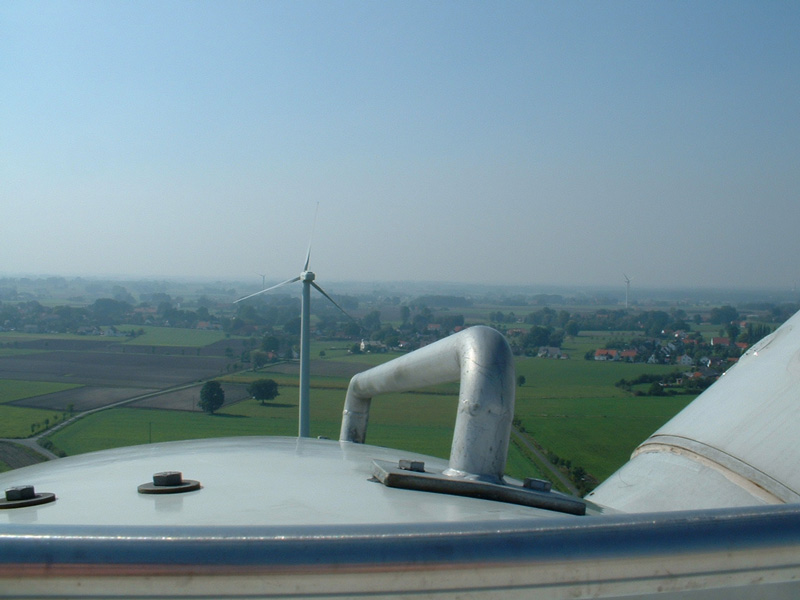

Flächenbedarf und Standortpacht
Standortauswahl
{kind=link}
Standorte für Windkraftanlagen werden innerhalb sogenannter Vorranggebiete ausgewiesen. Außerhalb dieser Gebiete ist in der Regel die Errichtung von Windenergieanlagen nicht möglich.
Flächenbedarf für eine Windkraftanlage
Die benötige Fläche für jede Windkraftanlage setzt sich zusammen aus Fundament, Kranstellfläche und Zuwegung. In der Summe wird eine Fläche von etwa 1.200 bis 2.500m² überbaut. Die restliche Fläche des Baugrundstücks kann nach wie vor landwirtschaftlich genutzt werden.
Verträge mit den Grundstückseigentümern
Die Standorte von Windkraftanlagen werden zumeist über einen Nutzungsvertrag mit dem Grundstückseigentümer gesichert. Die Höhe der Nutzungsentschädigung hängt von den Gegebenheiten des Projektes ab: Welche Windkraftanlagen werden gebaut? Wie hoch darf die Anlage werden? Wie viel Strom wird an dem Standort produziert?
Unsere Vergütung besteht aus einer jährlichen garantierten Mindestpacht und aus einer windertragsabhängigen Beteiligung – so bieten wir Sicherheit und Beteiligung am wirtschaftlichen Erfolg des Projekts.
Bei uns schon seit Jahren üblich: Wir sichern bereits am Anfang des Projektes durch Rückbaubürgschaften den späteren Rückbau der Windkraftanlagen ab. So schaffen wir Vertrauen zu den Grundstückseigentümern von Beginn an.